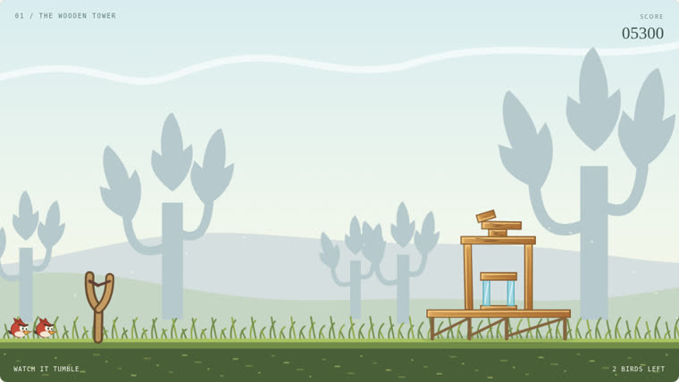
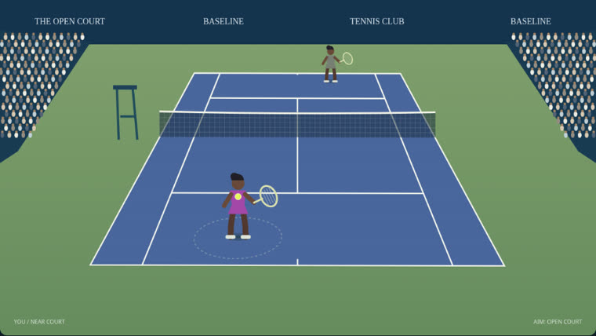
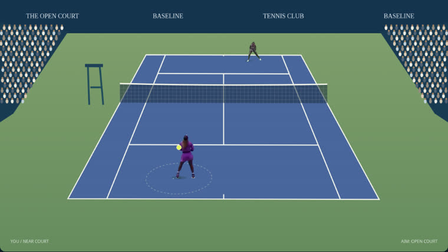
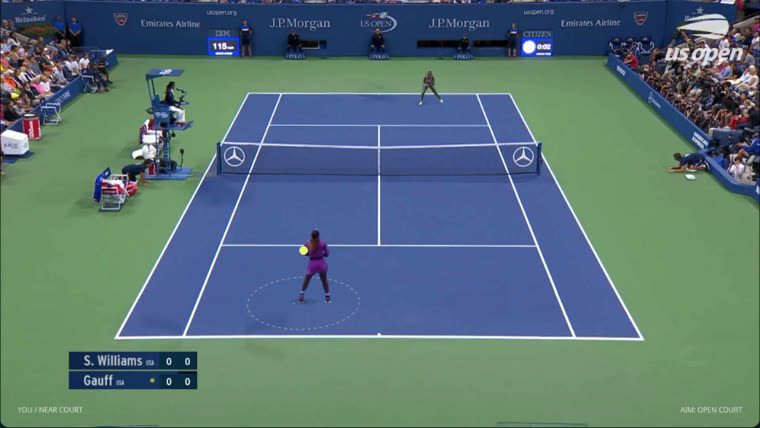
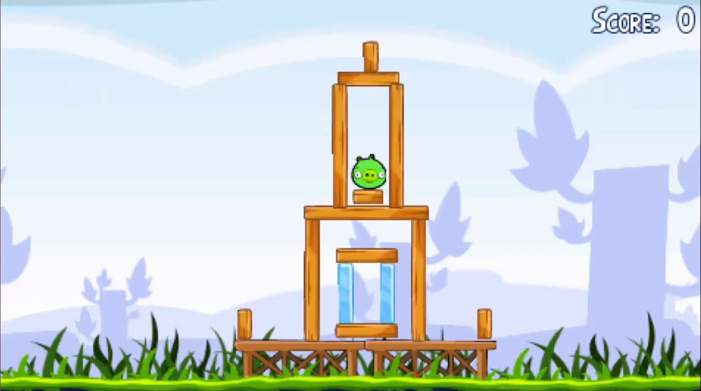
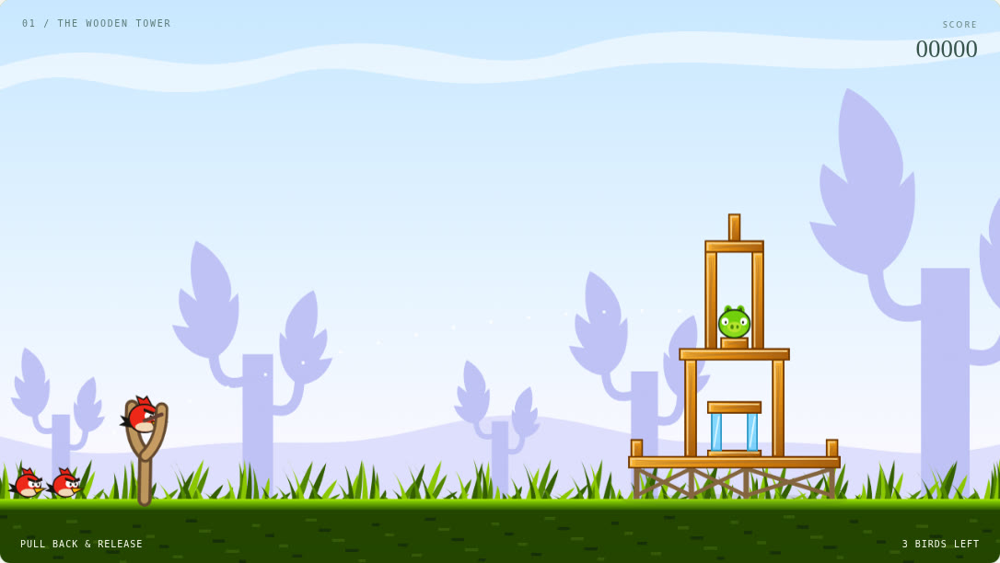
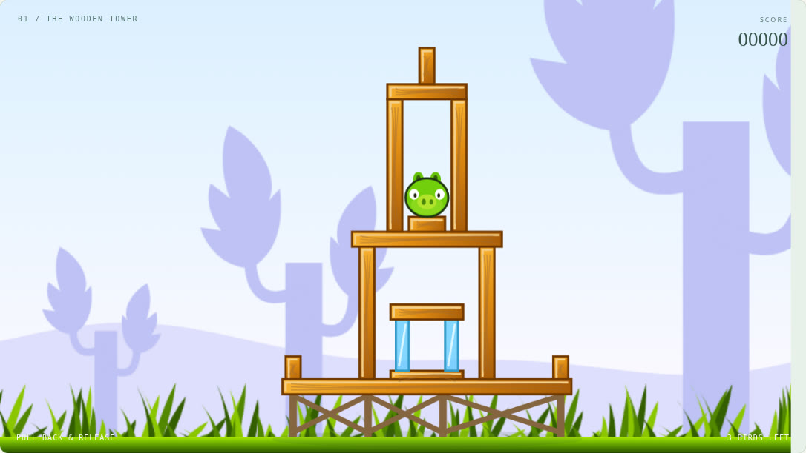

IMPROVEMENT 1

CVPR 2027 / Week 3
No, a human must point out which aspect needs improving.
“Compare your current game code against the reference video. Where do you think it needs improving?”

“Your appearance doesn't match the original video.”
“Compare your current game code against the reference video. Where do you think it needs improving?”

“Your appearance doesn't match the original video.”

“Your motion isn't continuous, and swinging left and right makes no difference.”

It cannot be fully replicated, only imitated pixel by pixel or copied in fragments.
Camera information does not match


Details do not match

The action is not learned. Each key press replays one recorded clip from the video.
One rally I played, the two condition channels it was turned into, and what the model generated from them. 574 frames, 23.9 s, 24 fps.
The same four stages for a slingshot shot. 124 frames, 5.2 s, 24 fps. Here the game is a 2-D physics engine, so every actor is already an exact rectangle or circle and the proxy is rebuilt from the bodies themselves — no camera has to be recovered.
Swap the renderer at the end of the chain, so the same proxy drives Cosmos instead of MiniMax H3. The proxy is the interface, and it should not have to change when the video model does.
Today the agent needs a human to say which aspect is wrong (Q1), and its appearance is imitated rather than learned (Q2). The open question is what it takes for the agent to recover the governing rules and a complete state from the video alone.
Depth plus a twelve-class Semantic-ID map is what this particular model was trained on, and it forces real choices: how much of a subject to encode, what to leave to the anchor and the text, and how to represent a game that has no depth buffer at all. A different split would give the model a different job.